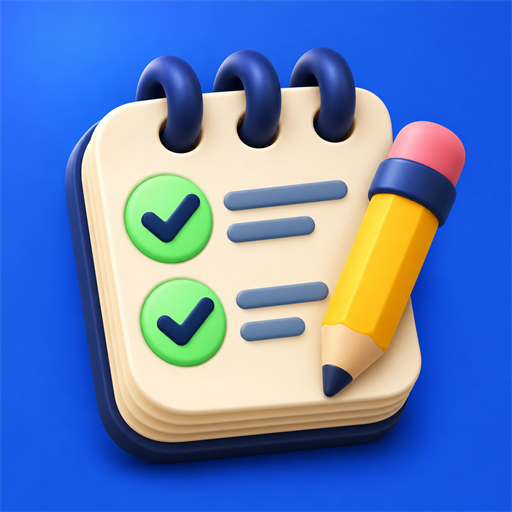

Actividades a tu manera
Organiza actividades y categorías personalizadas.
Registra cuándo realizaste una actividad y consulta su historial para recordar la última vez.

Registra cuándo realizaste una actividad y consulta su historial para recordar la última vez.
Esta aplicación se encuentra en prueba cerrada. El acceso está limitado a los participantes autorizados; todavía no se ofrece descarga pública.
Consultar sobre la pruebaOrganiza actividades y categorías personalizadas.
Consulta cuándo realizaste cada actividad.
Recibe avisos para tus actividades.
Edita, archiva y elimina registros con confirmación.
Explora sus pantallas en una presentación de teléfono en 3D. Toca una imagen para ampliarla.
Imágenes promocionales con datos de ejemplo. La apariencia puede variar según la versión y el dispositivo.